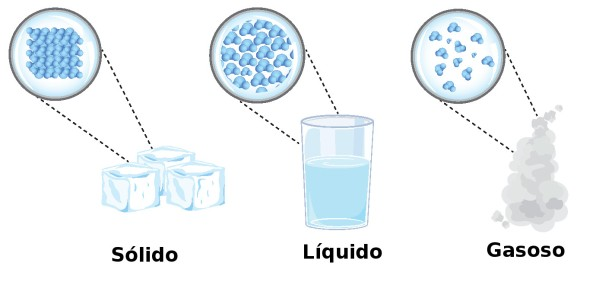

Estados físicos e mudanças de estado
A água de um copo, o gelo de uma bebida e o vapor que sai de uma panela são exemplos de como uma mesma substância pode se apresentar de diferentes formas. Essas diferenças estão relacionadas ao estado físico da matéria, que depende de fatores como temperatura, pressão e organização das partículas.
O estudo dos estados físicos permite compreender fenômenos cotidianos, como o derretimento do gelo, a secagem de roupas, a formação de gotículas em superfícies frias e o funcionamento de geladeiras. Também é importante para entender processos industriais e diversos fenômenos naturais.
O que são estados físicos?
Os estados físicos, também chamados de estados de agregação, são formas pelas quais a matéria pode se apresentar de acordo com as condições físicas do ambiente. No Ensino Médio, os três estados mais estudados são o sólido, o líquido e o gasoso.
A diferença entre esses estados está relacionada à organização, à distância média e ao movimento das partículas que constituem a matéria. Essas partículas podem ser átomos, moléculas ou íons, dependendo da substância.
Estado sólido
No estado sólido, as partículas permanecem muito próximas umas das outras e apresentam uma organização que dificulta grandes deslocamentos. Elas não ficam completamente paradas: vibram em torno de posições de equilíbrio.
Os sólidos apresentam, em geral, forma própria e volume definido. Isso significa que um pedaço de gelo, uma pedra ou uma barra de metal tende a manter sua forma quando transferido de um recipiente para outro.
Os sólidos podem ser classificados, de maneira geral, em cristalinos e amorfos. Nos sólidos cristalinos, as partículas apresentam uma organização regular de longo alcance, como ocorre no sal de cozinha e em muitos metais. Nos sólidos amorfos, essa organização não se estende da mesma maneira por todo o material, como ocorre no vidro comum.
É importante lembrar que os sólidos não são absolutamente incompressíveis. Entretanto, sua compressibilidade costuma ser muito pequena nas condições cotidianas.
Estado líquido
No estado líquido, as partículas continuam relativamente próximas, mas possuem maior liberdade de movimento do que nos sólidos. Elas podem deslizar umas em relação às outras, permitindo que o líquido escoe.
Os líquidos apresentam volume definido, mas não possuem forma própria. Eles assumem a forma da parte do recipiente que ocupam, mantendo aproximadamente seu volume quando a temperatura e a pressão não variam significativamente.
A água, o óleo e o álcool são exemplos de líquidos. Quando colocamos água em um copo e depois a transferimos para uma garrafa, sua forma muda conforme o recipiente, mas a quantidade de líquido continua ocupando aproximadamente o mesmo volume.
Embora as partículas de um líquido estejam próximas, elas não formam uma estrutura rígida como ocorre em muitos sólidos. Essa mobilidade explica propriedades como o escoamento e a capacidade de assumir a forma do recipiente.
Estado gasoso
No estado gasoso, as partículas apresentam grande liberdade de movimento e ficam, em geral, muito mais afastadas umas das outras do que nos estados sólido e líquido. Elas se movimentam continuamente em diferentes direções e colidem entre si e com as paredes do recipiente.
Os gases não possuem forma própria nem volume definido. Eles se expandem para ocupar todo o espaço disponível no recipiente e podem ter seu volume reduzido quando submetidos ao aumento de pressão.
O ar de um balão, o oxigênio presente no ar atmosférico e o gás de cozinha em sua fase gasosa são exemplos de materiais no estado gasoso.
Como existe muito espaço entre as partículas de um gás, ele costuma apresentar compressibilidade muito maior do que os líquidos e sólidos. Essa característica é utilizada em cilindros de gases comprimidos e em diversos sistemas pneumáticos.
Comparação entre os três estados físicos
| Característica | Sólido | Líquido | Gasoso |
|---|---|---|---|
| Forma | Geralmente definida | Assume a forma do recipiente | Assume a forma do recipiente |
| Volume | Geralmente definido | Geralmente definido | Não definido |
| Movimento das partículas | Principalmente vibração em posições de equilíbrio | Partículas próximas que deslizam umas sobre as outras | Movimento livre e desordenado |
| Compressibilidade | Muito baixa | Baixa | Elevada |
| Exemplo | Gelo | Água líquida | Vapor de água |
Como a temperatura influencia as partículas?
A temperatura está relacionada à energia cinética média das partículas. Em uma situação comum de aquecimento, o aumento da temperatura faz com que elas apresentem maior agitação térmica. No resfriamento, essa agitação tende a diminuir.
Quando uma substância recebe energia térmica, as partículas podem superar parte das interações que as mantêm próximas. Dependendo das condições, isso pode provocar a passagem do sólido para o líquido ou do líquido para o estado gasoso.
Quando uma substância perde energia térmica, as partículas tendem a apresentar menor agitação, e as interações entre elas podem favorecer a formação de estruturas mais condensadas, levando à passagem do gás para o líquido ou do líquido para o sólido.
Entretanto, a temperatura não é o único fator importante. A pressão também influencia os estados físicos e as temperaturas nas quais ocorrem as mudanças de estado.
Mudanças de estado físico
As mudanças de estado físico, também chamadas de mudanças de fase, são transformações nas quais uma substância passa de um estado físico para outro sem necessariamente alterar sua composição química.
Quando o gelo derrete, por exemplo, a água continua sendo constituída por moléculas de H2O. O que muda é o estado físico e a organização das partículas, não a identidade química da substância.
Fusão
A fusão é a passagem do estado sólido para o estado líquido. Ela ocorre quando a substância recebe energia suficiente para que suas partículas deixem de manter a organização característica do sólido e adquiram maior mobilidade.
Um exemplo cotidiano é o derretimento de um cubo de gelo fora do congelador. À medida que recebe energia do ambiente, o gelo pode atingir as condições necessárias para se transformar em água líquida.
Para uma substância pura sob pressão constante, a fusão ocorre em uma temperatura característica chamada ponto de fusão. A água pura, por exemplo, apresenta ponto de fusão próximo de 0 °C sob pressão atmosférica normal.
A fusão é classificada como um processo endotérmico, pois a substância absorve energia durante a mudança de estado.
Solidificação
A solidificação é a passagem do estado líquido para o estado sólido. Ela ocorre quando a substância perde energia térmica e suas partículas passam a apresentar uma organização característica do estado sólido.
Um exemplo é a formação de gelo quando a água é colocada em um congelador. Outro exemplo é o endurecimento da cera derretida quando ela esfria.
Para uma substância pura sob pressão constante, a solidificação ocorre na mesma temperatura do ponto de fusão. Assim, a água pura congela aproximadamente a 0 °C sob pressão atmosférica normal.
A solidificação é classificada como um processo exotérmico, pois a substância libera energia para o ambiente durante a mudança de estado.
Vaporização
A vaporização é a passagem do estado líquido para o estado gasoso. Ela pode ocorrer de três formas principais: evaporação, ebulição e calefação.
Evaporação
A evaporação é uma forma de vaporização lenta e gradual que ocorre na superfície de um líquido. Ela pode acontecer em diferentes temperaturas, desde que algumas partículas da superfície possuam energia suficiente para escapar para o estado gasoso.
Um exemplo é a secagem de roupas em um varal. Mesmo sem atingir a temperatura de ebulição, parte da água presente no tecido passa para o estado gasoso e se dispersa no ar.
A velocidade da evaporação depende de fatores como temperatura, área da superfície exposta, circulação do ar e umidade do ambiente. Em geral, temperaturas mais elevadas e maior circulação de ar favorecem a evaporação, enquanto uma umidade relativa elevada tende a dificultá-la.
Ebulição
A ebulição é uma forma de vaporização que ocorre com a formação de bolhas de vapor em toda a massa do líquido. Ela acontece quando as condições de temperatura e pressão permitem que o vapor se forme no interior do líquido.
Um exemplo é a água fervendo em uma panela. Sob pressão atmosférica normal, a água pura entra em ebulição aproximadamente a 100 °C.
A temperatura de ebulição depende da pressão externa. Em locais de grande altitude, onde a pressão atmosférica é menor, a água ferve a uma temperatura inferior a 100 °C. Em uma panela de pressão, o aumento da pressão interna eleva a temperatura de ebulição da água.
Calefação
A calefação é uma forma muito rápida de vaporização que ocorre quando um líquido entra em contato com uma superfície cuja temperatura está muito acima de seu ponto de ebulição.
Um exemplo é uma gota de água que cai sobre uma chapa metálica extremamente quente e se vaporiza rapidamente. Dependendo das condições, pode surgir uma camada de vapor entre a gota e a superfície, reduzindo temporariamente o contato direto entre elas.
A calefação diferencia-se da evaporação, que ocorre gradualmente na superfície, e da ebulição, que envolve a formação de bolhas de vapor no interior do líquido.
Condensação ou liquefação
A condensação, também chamada de liquefação em muitos contextos escolares, é a passagem do estado gasoso para o estado líquido. Esse processo costuma ocorrer quando o gás perde energia térmica ou quando as condições de pressão favorecem a formação da fase líquida.
Um exemplo cotidiano é o aparecimento de gotículas na parte externa de um copo com bebida gelada. Essas gotas não atravessam o copo: elas se formam quando o vapor de água presente no ar entra em contato com a superfície fria, perde energia e passa para o estado líquido.
Outro exemplo ocorre na formação de gotículas de água durante a condensação do vapor na atmosfera, processo importante para a formação de nuvens.
A condensação é um processo exotérmico, pois a substância libera energia térmica para o ambiente durante a mudança de estado.
Sublimação
A sublimação é a passagem direta do estado sólido para o estado gasoso, sem passar pelo estado líquido. Ela ocorre em condições específicas de temperatura e pressão.
Um exemplo conhecido é o gelo seco, que corresponde ao dióxido de carbono no estado sólido. Em condições ambientes comuns, ele passa diretamente para o estado gasoso, sem formar uma poça de líquido.
A naftalina também pode sublimar lentamente, liberando partículas para o ar. A velocidade desse processo depende das condições do ambiente e das características da substância.
A sublimação é classificada como endotérmica, pois a substância absorve energia para passar diretamente ao estado gasoso.
Ressublimação ou deposição
A ressublimação, também chamada de deposição, é a passagem direta do estado gasoso para o estado sólido, sem passar pelo estado líquido.
Um exemplo é a formação de geada em determinadas condições meteorológicas. O vapor de água presente no ar pode passar diretamente para o estado sólido sobre superfícies suficientemente frias, formando cristais de gelo.
A deposição é um processo exotérmico, pois ocorre liberação de energia térmica para o ambiente durante a formação do sólido.
Resumo das mudanças de estado físico
| Mudança | Passagem | Energia térmica |
|---|---|---|
| Fusão | Sólido → Líquido | Absorve energia |
| Solidificação | Líquido → Sólido | Libera energia |
| Vaporização | Líquido → Gasoso | Absorve energia |
| Condensação ou liquefação | Gasoso → Líquido | Libera energia |
| Sublimação | Sólido → Gasoso | Absorve energia |
| Ressublimação ou deposição | Gasoso → Sólido | Libera energia |
Os processos que absorvem energia térmica são chamados de endotérmicos. Já os processos que liberam energia térmica são chamados de exotérmicos.
Esses termos descrevem a transferência de energia durante a transformação. Eles não significam, por si só, que a temperatura da substância necessariamente aumenta ou diminui durante todo o processo.
O que acontece com a temperatura durante a mudança de estado?
Para uma substância pura sob pressão constante, a temperatura permanece constante durante uma mudança de estado quando as duas fases estão em equilíbrio e a transformação ocorre nas condições usuais estudadas no Ensino Médio.
Isso acontece porque a energia transferida durante a mudança de fase é utilizada principalmente para alterar as interações entre as partículas, em vez de aumentar ou diminuir sua energia cinética média.
Por exemplo, ao aquecer gelo a 0 °C sob pressão atmosférica normal, a temperatura permanece próxima de 0 °C enquanto o gelo e a água líquida coexistem durante a fusão. Depois que todo o gelo derrete, o fornecimento de energia pode elevar a temperatura da água líquida.
O mesmo princípio é observado durante a ebulição da água pura sob pressão constante: a temperatura permanece próxima do ponto de ebulição enquanto coexistem água líquida e vapor, até que a vaporização se complete.
Em misturas, o comportamento pode ser diferente. Muitas misturas não apresentam uma única temperatura fixa durante toda a fusão ou ebulição, embora existam exceções, como determinadas misturas eutéticas e azeotrópicas.
Ponto de fusão e ponto de ebulição
O ponto de fusão é a temperatura na qual uma substância passa do estado sólido para o líquido sob determinada pressão. O ponto de ebulição é a temperatura na qual ocorre a ebulição sob determinada pressão externa.
Essas temperaturas são características importantes para o estudo e a identificação de substâncias. Entretanto, elas devem ser comparadas em condições equivalentes, pois podem variar com a pressão e com a composição da amostra.
Para a água pura sob pressão atmosférica normal, o ponto de fusão é aproximadamente 0 °C e o ponto de ebulição é aproximadamente 100 °C.
Diferença entre gás e vapor
No uso cotidiano, as palavras gás e vapor muitas vezes são utilizadas como sinônimos. Entretanto, em uma distinção tradicional da Química, chama-se vapor a fase gasosa de uma substância que pode ser liquefeita por compressão em condições adequadas, sem que seja necessário primeiro resfriá-la abaixo de sua temperatura crítica.
O termo gás costuma ser utilizado para uma substância que se encontra acima de sua temperatura crítica, de modo que não pode ser liquefeita apenas pelo aumento da pressão. A distinção depende das condições de temperatura e pressão da substância.
Por isso, o vapor de água é uma expressão comum para a água no estado gasoso. É importante notar que o vapor de água propriamente dito é invisível; a nuvem esbranquiçada que muitas vezes vemos acima de uma chaleira é formada principalmente por pequenas gotículas de água líquida condensada.
As mudanças de estado no ciclo da água
O ciclo da água é um exemplo natural da importância das mudanças de estado físico. A energia proveniente do Sol favorece a evaporação da água de oceanos, rios, lagos e superfícies úmidas. As plantas também liberam vapor de água para a atmosfera por meio da transpiração.
À medida que o ar úmido sobe e esfria, parte do vapor pode condensar, formando pequenas gotículas ou cristais de gelo nas nuvens. Posteriormente, a água retorna à superfície por meio da precipitação, que pode ocorrer na forma de chuva, neve ou granizo, dependendo das condições atmosféricas.
Ao chegar ao solo, a água pode infiltrar-se, escoar pela superfície, acumular-se em reservatórios ou retornar à atmosfera. A circulação contínua da água entre a superfície terrestre e a atmosfera envolve diferentes processos físicos e é fundamental para os ecossistemas.
Resumo do conteúdo
- Sólido: apresenta forma e volume geralmente definidos; suas partículas vibram em posições de equilíbrio.
- Líquido: apresenta volume definido e assume a forma do recipiente; suas partículas possuem mobilidade.
- Gasoso: não possui forma nem volume definidos e se expande para ocupar o recipiente.
- Fusão: passagem do sólido para o líquido.
- Solidificação: passagem do líquido para o sólido.
- Vaporização: passagem do líquido para o gasoso, podendo ocorrer por evaporação, ebulição ou calefação.
- Condensação: passagem do gasoso para o líquido.
- Sublimação: passagem direta do sólido para o gasoso.
- Ressublimação: passagem direta do gasoso para o sólido.
- Processos endotérmicos: absorvem energia térmica.
- Processos exotérmicos: liberam energia térmica.
Continue seus estudos
Agora que você conhece os estados físicos e suas transformações, pode avançar para o estudo das diferentes formas pelas quais a matéria se apresenta em uma amostra.
Próximo assunto recomendado: Substâncias e misturas.
Nesse conteúdo, você aprenderá a distinguir substâncias puras e misturas, compreender a diferença entre sistemas homogêneos e heterogêneos e identificar exemplos presentes no cotidiano.
O conteúdo dessa página foi gerado por IA pois a Moderna PLUS não se aprofunda aos conceitos de base.
Fontes consultadas
- Toda Matéria — Mudanças de estado físico: https://www.todamateria.com.br/mudancas-estado-fisico/
- Brasil Escola — Estados físicos da matéria: https://brasilescola.uol.com.br/quimica/estados-fisicos-materia.htm
- Brasil Escola — Como ocorrem as mudanças de estado físico da matéria: https://brasilescola.uol.com.br/quimica/como-ocorrem-mudancas-estado-fisico-materia.htm
- Mundo Educação — Estados físicos da matéria: https://mundoeducacao.uol.com.br/quimica/estados-fisicos-materia.htm
- OpenStax — *Chemistry 2e*, Phase Transitions: https://openstax.org/books/chemistry-2e/pages/10-3-phase-transitions
- OpenStax — *Physics*, Phase Change and Latent Heat: https://openstax.org/books/physics/pages/11-3-phase-change-and-latent-heat